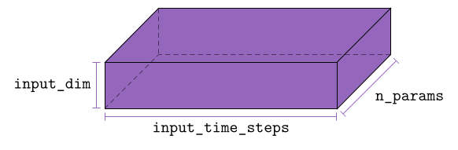
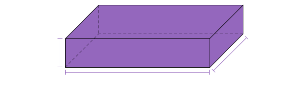

Snapshot Matrix
The snapshot matrix stores solutions of the high-dimensional ODE (obtained from discretizing a PDE). In the offline phase of reduced order modeling this is then used to construct reduced bases in a data-driven way. So (for a single parameter[1]) the snapshot matrix takes the following form:
\[M = \left[\begin{array}{c:c:c:c} \hat{u}_1(t_0) & \hat{u}_1(t_1) & \quad\ldots\quad & \hat{u}_1(t_f) \\ \hat{u}_2(t_0) & \hat{u}_2(t_1) & \ldots & \hat{u}_2(t_f) \\ \hat{u}_3(t_0) & \hat{u}_3(t_1) & \ldots & \hat{u}_3(t_f) \\ \ldots & \ldots & \ldots & \ldots \\ \hat{u}_{2N}(t_0) & \hat{u}_{2N}(t_1) & \ldots & \hat{u}_{2N}(t_f) \\ \end{array}\right].\]
In the example above we store a matrix whose first axis is the system dimension (i.e. a column is an element of $\mathcal{M}\subset\mathbb{R}^{2N}$) and the second dimension gives the time step.
The starting point for using the snapshot matrix as data for a machine learning model is that all the columns of $M$ live on a lower-dimensional solution manifold $\mathcal{M}$ and we can use techniques such as proper orthogonal decomposition and autoencoders to find or approximate this solution manifold. We also note that the second axis of $M$ does not necessarily indicate time but can also represent various parameters (including initial conditions).
Snapshot Tensor
The snapshot tensor fulfills the same role as the snapshot matrix but has a third axis that describes different initial parameters (such as different initial conditions).
 
When drawing samples from the snapshot tensor to train a neural networks we also need to specify a sequence length (as an argument to the Batch struct). When sampling a batch from the snapshot tensor we sample over the second axis (the time dimension) and the third axis of the tensor (the parameter dimension). The total number of batches[2] is
\[\lceil\mathtt{(dl.input\_time\_steps - batch.seq\_length) * dl.n\_params / batch.batch\_size}\rceil,\]
where $\lceil\cdot\rceil$ is the ceiling operation.
- 1If we deal with a parametrized PDE then the data can be interpreted as a snapshot tensor. For training an autoencoder in the offline phase however, we interpret these data as a matrix because they come from the same solution manifold; each column of the snapshot matrix $M$ represents a point on the solution manifold.
- 2The number of batches shown here is for the case $\mathtt{prediction\_window} = 0.$ If $\mathtt{prediction\_window} \neq 0,$ this number may be smaller. The corresponding function is
GeometricMachineLearning.number_of_batches.